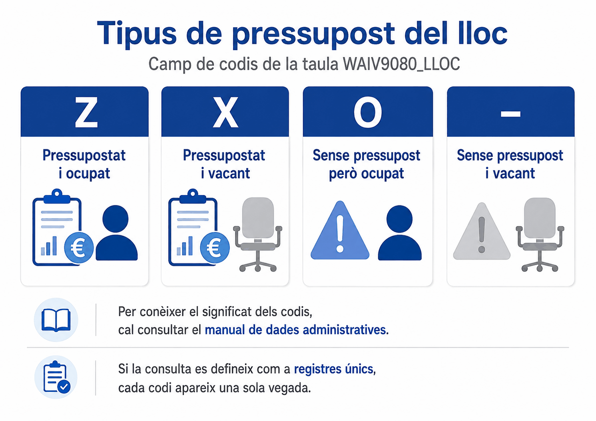
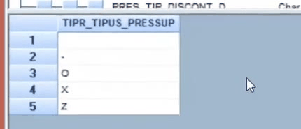
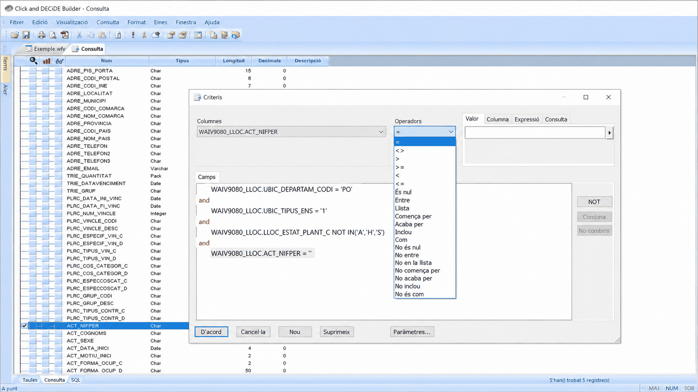
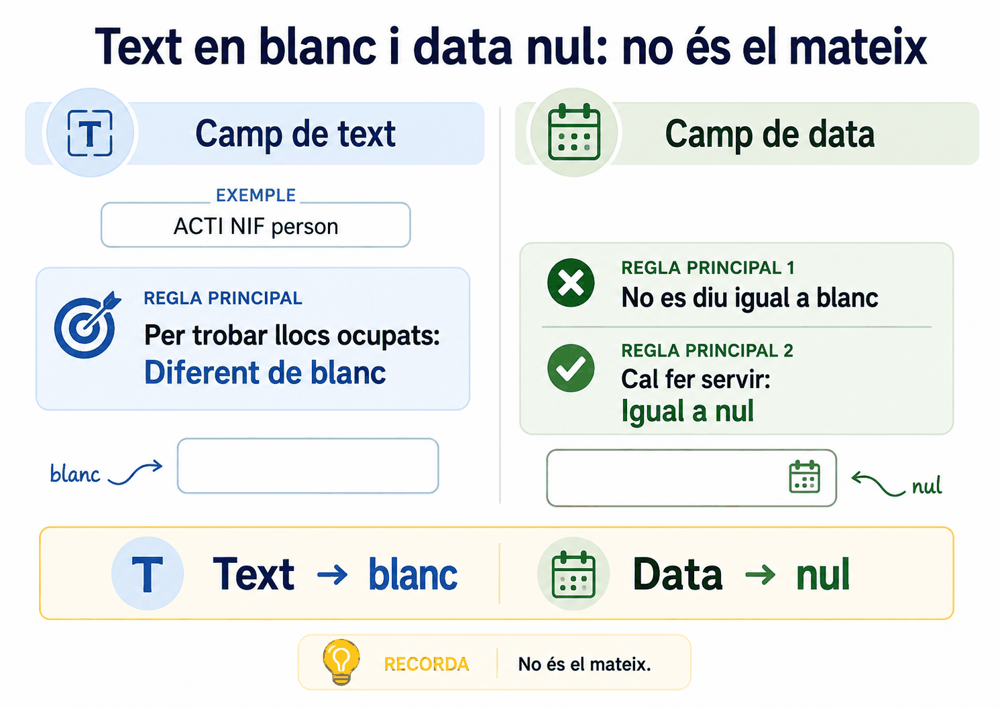
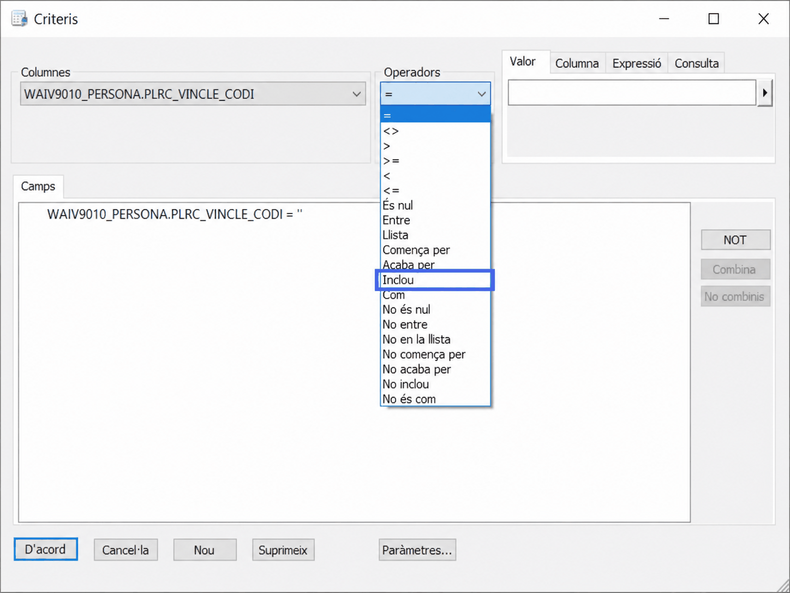
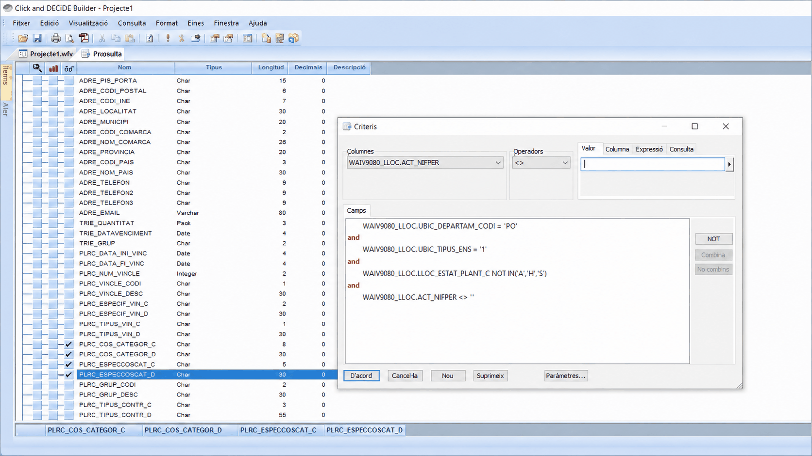

Apartat 1El tipus de pressupost
El camp TIPR_TIPUS_PRESSUP indica l'estat pressupostari del
lloc. Té una particularitat que el fa incòmode:
A diferència de la majoria, aquest camp només conté codis
i no té una columna equivalent amb la descripció. Sense consultar el manual
de dades administratives, una Z no vol dir absolutament res.
El camp creua dues coses alhora: si el lloc té diners i si té algú a dins. Per això té cinc valors i no quatre:
| Valor | Pressupostat | Ocupat | Significat |
|---|---|---|---|
| Z | Sí | Sí | Lloc pressupostat i ocupat. El cas normal d'un lloc en funcionament. |
| X | Sí | No | Lloc pressupostat i vacant. Hi ha diners i no hi ha ningú: és la vacant que es pot cobrir. |
| V | Sí | No | Lloc pressupostat, vacant i que no es pot ocupar. |
| O | No | Sí | Lloc ocupat però sense pressupost associat. Passa en incorporacions urgents, quan la persona entra abans que es formalitzi la dotació. |
| - | No | No | Plaça sense pressupost i vacant. Ni diners ni persona. |
X i V són totes dues vacants
pressupostades. La diferència és que les V
no es poden ocupar. Qui demana "les vacants amb diners"
i filtra per les dues, o filtra només per "pressupostat i vacant" sense
mirar el codi, entrega una llista de places que no es poden cobrir.

El cas de la O val la pena entendre'l perquè explica per
què existeix: és el lloc ocupat sense pressupost, i es dona en
incorporacions d'urgència. Cal un reforç o una substitució de
seguida, la persona entra, i la dotació pressupostària encara no està
formalitzada. Si compteu llocs amb diners assignats i hi incloeu les
O, comptareu places que encara no en tenen.
Apartat 2Descobrir codis sense descripció
Quan us trobeu un camp com aquest i no teniu el manual a mà, hi ha una tècnica per veure quins valors existeixen realment a les vostres dades.
En comptes de milers de files repetides, obteniu una llista curta amb cada valor una sola vegada. És la manera més ràpida de saber què hi ha en un camp desconegut, i és el contingut sencer de la unitat 11.
Això us diu quins codis hi ha a les vostres dades, no
quins codis existeixen. Si el vostre departament no té cap
lloc V, no en veureu cap, i podríeu concloure que no existeix.
La llista completa sempre és al PDF de la taula.

V que documenta el
manual no hi surt. Per això es fa aquesta consulta abans de
filtrar: el que hi ha al vostre àmbit no és el que diu el manual,
sinó això.
Videotutorial 9 de l'EAPC, minut 0:53.
Apartat 3Les combinacions que importen
Aquest camp gairebé sempre es combina amb l'estat de plantilla de la unitat 8. Aquestes són les preguntes reals i el seu criteri:
| Pregunta | Criteri |
|---|---|
| Quantes places tenim dotades i cobertes | TIPR = 'Z' |
| Quantes vacants podem cobrir ara | TIPR = 'X' i estat de plantilla vigent |
| Quantes places tenim sense dotar | TIPR Llista ('O', '-') |
| Quanta gent treballa sense dotació formalitzada | TIPR = 'O' |
Apartat 4Text buit i data nul·la
Arribem al punt que hem anunciat a les unitats 4 i 6. Ara toca aplicar-lo, i val la pena tenir-lo molt clar perquè reapareixerà a les unitats 13, 14 i 18.
Camp de text
Click & Decide omple els camps de text amb espais fins a la seva longitud màxima. Un NIF "buit" no està buit: conté nou espais.
Cal comparar-lo amb un espai en blanc.
Camp de data
Una data no es pot farcir d'espais. Quan no n'hi ha, el camp és nul de veritat.
Aquí És nul és l'operador correcte.

Char. Hi surten És nul i No és nul igualment: el programa no us avisa de res.

Text buit s'omple d'espais; data buida és nul·la. Si el camp és de text, compareu amb un espai. Si és de data, feu servir És nul.
Per què hi cau tanta gent

La llista d'operadors és la mateixa per a tots els tipus de
camp. Sobre un camp Char, Click & Decide us
ofereix És nul amb la mateixa naturalitat que
qualsevol altre operador: no el desactiva, no el marca i no diu res.
Simplement, en executar, torna zero registres.
Per això aquesta unitat és la que més temps estalvia de tot el curs. No hi ha cap senyal a la interfície que us protegeixi d'aquest error: l'única defensa és saber de quin tipus és el camp.
És temptador buscar la buidor amb Inclou un
espai, i és una trampa. ACT_NIFPER té deu
caràcters i un NIF en fa nou: tots els valors, els plens
també, porten un espai de farciment al final. Amb
Inclou un espai us sortirien tots els
registres de la taula.
Amb Igual no passa, perquè el valor que escriviu també es farceix fins a la llargada del camp: un espai passa a ser deu espais, i això només casa amb els que estan buits del tot. Inclou un espai només funciona quan els valors omplen el camp sencer, que és el cas menys freqüent.
Apartat 5Els llocs ocupats
Una de les consultes més demanades: quins llocs de la plantilla tenen algú
treballant-hi ara mateix. El camp és ACT_NIFPER, el NIF de
l'ocupant actual, i la lògica és directa:
- si el camp està en blanc, no hi ha NIF, i el lloc està buit;
- si el camp té un NIF escrit, el lloc està ocupat.
-
Obriu els criteris del camp
Clic a la casella de la lupa a la línia d'
ACT_NIFPER. -
Trieu l'operador Diferent
Perquè volem els que no estan en blanc.
-
Premeu una vegada la barra espaiadora
A la caixa de valor, un sol espai. No escriviu res més. És l'única part que costa de creure la primera vegada.
-
Accepteu i executeu
El criteri diu: mostra'm els registres on aquest camp contingui algun text que no sigui un simple espai en blanc.
Amb la caixa buida, el criteri és <> '': diferent de
res. En prémer una vegada la barra espaiadora passa a ser
<> ' ': diferent d'un espai. La primera versió
no serveix; la segona és la que torna els llocs ocupats. A la pantalla
l'única diferència visible és un espai entre les cometes, i és tot el que
hi ha entre una consulta correcta i una que no ho és.

<> '', amb el valor buit.
Apartat 6Els llocs reservats
Exactament la mateixa lògica, canviant de camp. Per saber quins llocs estan
reservats per a algú, per exemple per a persones en excedència amb reserva,
s'aplica el criteri sobre RES_NIFPER.
I el contrari, els llocs sense reserva, és el que ja vau resoldre a l'exercici EX-06-3: comparar amb l'espai en comptes de negar-lo. A la unitat 18 hi ha el matís que falta per als casos on els valors normals ja contenen espais.
Apartat 7Vacants realment ocupables
Ara podem construir la consulta model 2 de la unitat 00, que és el cas real que junta tot el que hem vist en dues unitats.
Llocs vigents i vacants ocupables
- Per a què serveix
- Detectar llocs actuals que poden necessitar cobertura.
- Taula
- WAIV9080_LLOC
- Criteri
- LLOC_ESTAT_PLANTILLA = 'R' AND TIPR_TIPUS_PRESSUP = 'X'
- Per què cada peça
-
Rdeixa només places de la RLT, i descarta històriques, previstes i provisionals.Xdeixa només les vacants amb dotació i ocupables, i descarta lesV, que tenen diners però no es poden cobrir.
27 llocs resultat de control
No cal filtrar ACT_NIFPER per veure que estan buits: el codi
X ja vol dir vacant. Posar-hi les dues coses
no és incorrecte, però és redundant. Entendre els codis estalvia criteris.
Apartat 8Errors freqüents
El que passa
Filtro per NIF nul i no surt res.
La llista de vacants inclou places que no es poden cobrir.
Tinc llocs ocupats sense pressupost. És un error de dades?
No sé què vol dir aquest codi.
El que passa de veritat
És un camp de text: està ple d'espais, no és nul. Compareu amb un espai.
Heu inclòs les V. Només les X són ocupables.
No. És el codi O, i passa en incorporacions urgents anteriors a la dotació.
Aquest camp no té descripció. PDF de la taula, o consulta de registres únics per veure què hi ha.
Apartat 9Exercicis
Vacants ocupables
ReprodueixConstruïu la consulta model 2: llocs de la RLT, pressupostats i vacants ocupables. Mostreu el codi de lloc, la unitat orgànica i el tipus de pressupost.
Comprovació
27 llocs
Comproveu que a la columna de tipus de pressupost del resultat només
hi ha X. Si hi apareix cap V, el criteri
està mal escrit.
Les dues maneres de comptar vacants
TrencaFeu tres consultes sobre els llocs vigents i compareu-ne les xifres:
TIPR = 'X'TIPR Llista ('X','V')ACT_NIFPERigual a un espai, és a dir, llocs sense ocupant
Què hauria d'haver passat
1 < 2 < 3. Les tres responen preguntes diferents i totes tres són correctes segons què us hagin demanat:
- 1. Vacants amb diners i ocupables. És la que voleu per planificar cobertures.
- 2. Totes les vacants pressupostades, incloses les que no es poden ocupar. Serveix per a un informe econòmic.
- 3. Tots els llocs buits, tinguin dotació o no. Hi entren també les places sense pressupost.
Aquesta és, en petit, la lliçó de tot el curs: la mateixa paraula, "vacants", té tres respostes numèriques diferents.
Cobertura real d'una unitat
ResolUs demanen, per a la vostra unitat, quants llocs vigents estan ocupats però no reservats per ningú. És a dir, llocs amb ocupant estable, sense cap persona amb dret a tornar-hi.
Pista
Són tres condicions unides per AND, i dues d'elles són sobre camps de text: una busca contingut i l'altra busca buidor.
Solució
Fixeu-vos en l'asimetria: per buscar contingut es fa servir Diferent d'un espai, i per buscar buidor, Inclou un espai.
Aquesta segona part té una excepció important que veurem a la unitat 18: si els valors normals del camp ja contenen espais entre paraules, com els noms de població, Inclou els seleccionaria tots, i llavors cal Igual a un espai. Amb un camp de NIF no hi ha aquest problema.
Apartat 10Llista de comprovació
- Enumerar els cinc valors de
TIPR_TIPUS_PRESSUPi què creuen. - Explicar la diferència entre
XiVi per què importa. - Justificar per què
Ono és un error de dades. - Descobrir els codis d'un camp sense descripció amb registres únics.
- Saber que això mostra els codis presents, no tots els possibles.
- Explicar per què un camp de text buit no és nul.
- Obtenir els llocs ocupats amb el criteri de l'espai en blanc.
- Aplicar la mateixa tècnica als llocs reservats.
- Distingir buscar contingut de buscar buidor en un camp de text.
- Construir la consulta de vacants realment ocupables.
- Explicar per què "vacants" pot tenir tres xifres diferents.
Fins ara totes les consultes tornen el detall, una fila per registre. La unitat 10 comença la Part III i ensenya a resumir: comptar, agrupar i calcular mitjanes, màxims i mínims. Allà apareixen els tres comptadors que el material sovint confon.